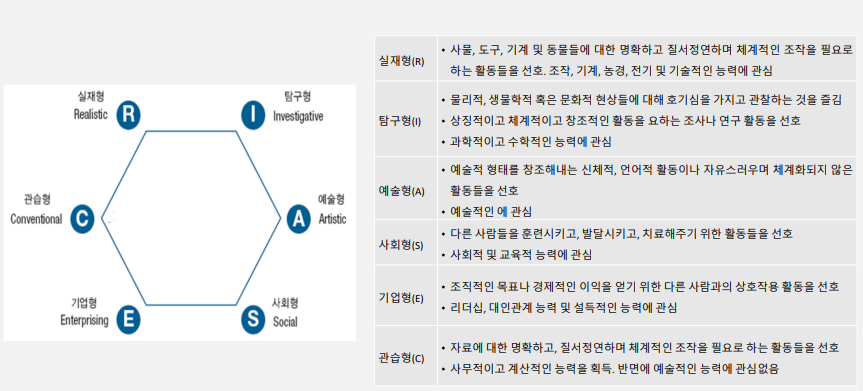
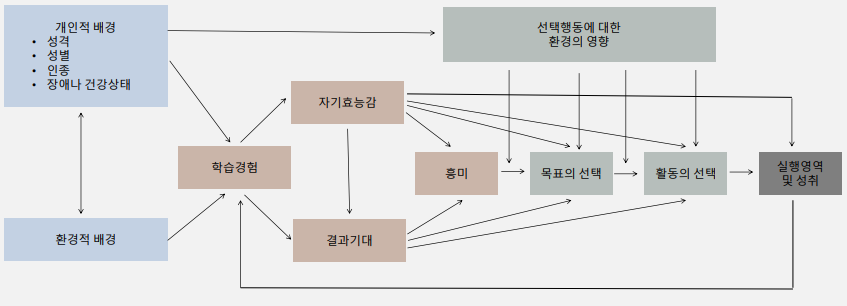

진로는 언제 선택하는가?
Super의 전생애발달이론
-
성장기
자기에 대한 지각이 생겨나고 직업세계에 대한 기본적인 이해가 이루어지는 시기
-
탐색기
미래에 대한 계획이 주요한 진로발달 과업인 시기
-
확립기
자신이 선택한 직업에 대한 정착, 공고화, 발전의 발달과업을 수행하는 시기
-
유지기
자신이 몸담고 있는 분야에서 자신의 수행수준을 유지하거나 개선하거나 혹은 새로운 직업분야를 택하는 등의 선택상황에 직면하게 되는 시기
-
쇠퇴기
신체적 능력이 저하되고 직업활동에 대한 흥미 감소함에 따라 은퇴준비 및 은퇴활동 시기
Marcia의 자아정체감 이론과 진로발달
진로정체감의 발달이란, 사람이 자신이 어떤 사람인지에 대한 이해와 더불어 자신에게 맞는 일이 무엇인지를 찾아가는 과정
위기 차원 : 정체감의 측면들에 도달에 있어 의문을 제기하고 적극적으로 여러가지 대안을 탐색하는 것 / 몰입 차원 : 직업선택, 이념적 신념에 있어 적극적으로 자신을 투자하는 것

진로결정의 어려움
상담에서 진로고민 내담자 유형
문제진단

어떻게 선택하는가?
Holland의 성격이론
무엇을 확인해야 할까?
- 일관성 : 정육각형 모형상의 두 유형간 근접성. 높은 일관성 수준은 진로결정 방향면에서 안정성 예측
- 변별성 : 직업적 흥미 특성이 얼마나 뚜렷하게 나타나는가
- 일치성 : 직업적 흥미가 직업 환경과 어느정도 맞는지를 의미
사회인지진로이론 모형
진로결정을 하기 위해
진로결정 장벽을 넘으려면
- 자기에 대한 이해
- 직업 세계에 대한 이해
- 의사결정 방법